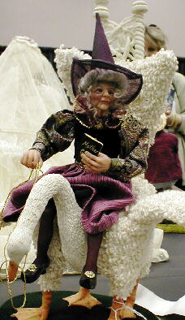

Santa Fe 2000 Doll Show - Page 2

This is another first place winner in the competition. He is made of silicone and has an eerie, realistic feel to him. The artist is ???
A magnificent piece by one of the Japanese artists, I believe.

Marilynn Huston's wonderful Mother Goose. Marilynn made both the doll and the chair.
The lovely Marilynn Huston, herself.
Marilynn's entry in the "costume" category, for which she received a bronze ?? medal.